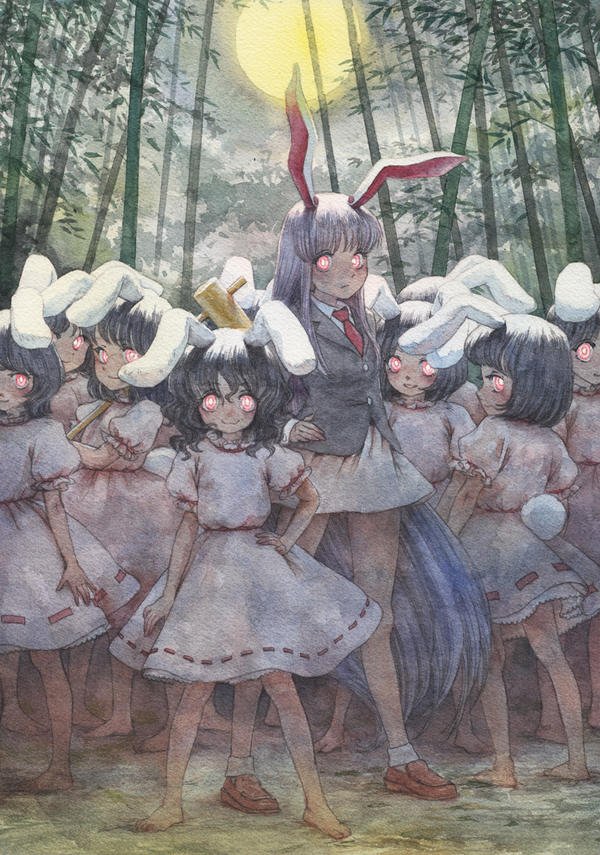
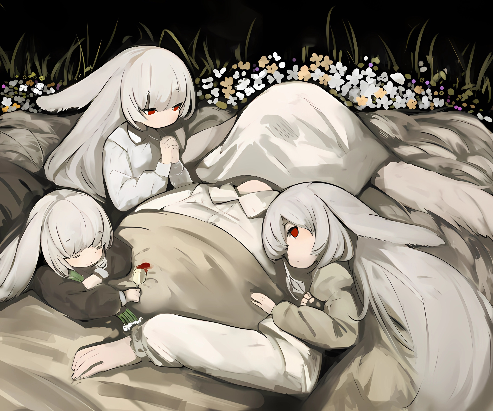

欢迎来到永夜竹林
致永恒的幻想乡
这里是一个以东方Project为核心的OpenGL教程网站，融合同人文化与技术学习，让热爱与成长并行。
东方Project
东方Project是日本同人游戏开发者太田顺也（ZUN）开发的一系列弹幕射击游戏为核心，衍生出海量社区同人创作的文化IP统称。
其覆盖范围遍及全球，涵盖同人游戏、音乐、漫画、动画及程序模组等多元形式，形成了独特的"幻想乡文化圈"。
开放的二创生态是其生命力的核心——从插画、手书到Cosplay、周边，甚至跨界联动内容，只要源于东方IP的灵感，都能成为文化圈层的一部分。
20+
核心游戏作品
100+
经典角色
25+
发展年限
作品系列
1. 东方灵梦传 - 东方Project第1作
2. 东方封魔录 - 东方Project第2作
3. 东方梦时空 - 东方Project第3作
4. 东方幻想乡 - 东方Project第4.5作
5. 东方怪绮谈 - 东方Project第5作
6. 东方红魔乡 - 东方Project第6作
7. 东方妖妖梦 - 东方Project第7作
8. 东方萃梦想 - 东方Project第7.5作
9. 东方永夜抄 - 东方Project第8作
10. 东方花映冢 - 东方Project第9作
11. 东方文花帖 - 东方Project第9.5作
12. 东方风神录 - 东方Project第10作
13. 东方绯想天 - 东方Project第10.5作
14. 东方地灵殿 - 东方Project第11作
15. 东方星莲船 - 东方Project第12作
16. 东方非想天则 - 东方Project第12.3作
17. 东方神灵庙 - 东方Project第13作
18. 东方心绮楼 - 东方Project第13.5作
19. 东方辉针城 - 东方Project第14作
20. 东方深秘录 - 东方Project第14.5作
21. 东方绀珠传 - 东方Project第15作
22. 东方凭依华 - 东方Project第15.5作
23. 东方天空璋 - 东方Project第16作
24. 东方鬼形兽 - 东方Project第17作
25. 东方刚欲异闻 - 东方Project第18作
26. 东方刚欲异闻·被水淹没的沉愁地狱 - 东方Project第18.5作
27. 东方兽王园 - 东方Project第19作
28. 东方锦上京 - 东方Project第20作
经典角色
博丽灵梦
博丽神社巫女

雾雨魔理沙
魔法使

蕾米莉亚·斯卡雷特
红魔馆主人

西行寺幽幽子
红魔馆二小姐
兔子画廊

